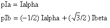

Vector Inverse Clarke Transform
- __STATIC_FORCEINLINE void riscv_inv_clarke_f32 (float32_t Ialpha, float32_t Ibeta, float32_t *pIa, float32_t *pIb)
- __STATIC_FORCEINLINE void riscv_inv_clarke_q31 (q31_t Ialpha, q31_t Ibeta, q31_t *pIa, q31_t *pIb)
- group Vector Inverse Clarke Transform
Inverse Clarke transform converts the two-coordinate time invariant vector into instantaneous stator phases.
The function operates on a single sample of data and each call to the function returns the processed output. The library provides separate functions for Q31 and floating-point data types.
- Algorithm
where
pIaandpIbare the instantaneous stator phases andIalphaandIbetaare the two coordinates of time invariant vector. - Fixed-Point Behavior
Care must be taken when using the Q31 version of the Clarke transform. In particular, the overflow and saturation behavior of the accumulator used must be considered. Refer to the function specific documentation below for usage guidelines.
Functions
- __STATIC_FORCEINLINE void riscv_inv_clarke_f32 (float32_t Ialpha, float32_t Ibeta, float32_t *pIa, float32_t *pIb)
Floating-point Inverse Clarke transform.
- Parameters:
Ialpha – [in] input two-phase orthogonal vector axis alpha
Ibeta – [in] input two-phase orthogonal vector axis beta
pIa – [out] points to output three-phase coordinate
apIb – [out] points to output three-phase coordinate
b
- __STATIC_FORCEINLINE void riscv_inv_clarke_q31 (q31_t Ialpha, q31_t Ibeta, q31_t *pIa, q31_t *pIb)
Inverse Clarke transform for Q31 version.
- Scaling and Overflow Behavior
The function is implemented using an internal 32-bit accumulator. The accumulator maintains 1.31 format by truncating lower 31 bits of the intermediate multiplication in 2.62 format. There is saturation on the subtraction, hence there is no risk of overflow.
- Parameters:
Ialpha – [in] input two-phase orthogonal vector axis alpha
Ibeta – [in] input two-phase orthogonal vector axis beta
pIa – [out] points to output three-phase coordinate
apIb – [out] points to output three-phase coordinate
b